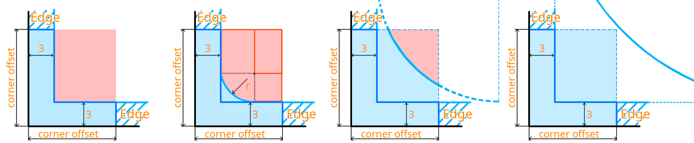

After working on a thorough overhaul of the gesture navigation mode of the Plasma Mobile task switcher (see my previous blog) I've been thinking about some more things I could do to improve interaction and navigation for Plasma Mobile. As a self-proclaimed gesture connoisseur this obviously means adding more gesture capabilities.
Now, something that would be really cool is having the ability for setting custom gestures in the screen corners, specifically the lower screen corners. This should very nicely complement the task switcher navigation gesture on the lower border and provide a convenient shortcut to something, more on that later.
Ideally for this I want to leverage KWin's gesture capabilities to not have to reinvent the wheel. There is just one tiny problem: KWin doesn't support touch screen corner gestures.
Ultimately: I don't know. But having now worked on adding them I think I know a likely reason: It's surprisingly hard.
Before we can continue let's pause for a second to get some terminology out of the way. In KWin's codebase ScreenEdge (as well as Edge) refers to classes that store information regarding, well, the edges of a screen. Crucially, this also includes screen corners, not just the side edges.
The same screen edge instances are shared between the "hot corner" functionality for mouse input (triggered by moving the mouse cursor into a corner or side edge), as well as touch gestures. The screen edges were however restricted to only listen for touch input when they are actually an edge and not a corner.
The screen edges themselves had little reason to do so, but it was restricted that way because corner gestures made two important things a lot more complex:
GestureRecognizer which... recognizes gestures (who'd have thought) has a slightly harder time doing its gesture recognizing because corner gestures don't have a strict direction; They should be invokable by a mostly upwards, mostly horizontal or diagonal move - the only relevant part is that the gesture started in the corner. Compare this to the edge gestures which only trigger on orthogonal movement (ie: The bottom edge gesture only triggers on mostly upwards movement)
I want to elaborate a bit on the second part: The previous ScreenEdge geometry logic was delightfully simple. There was a hardcoded value of 3 logical pixels (= pixels, but scaled by the display scaling factor) of thickness. This applied to the edges making them 3 logical pixels thick and otherwise completely fill their respective screen edge. Corners on the other hand got "the rest" making them a neat 3x3 logical pixels in size. Great for a mouse since you can just throw that into the screen corner and the edges make your cursor properly "find" the exact corner.
However, this is not quite as usable for touch inputs. A thin edge is no problem, just swipe in from the edge and the first pixels you touch from the touch sensitive screen area will be in the 3 pixels area. The corner however is not as easily hittable with a finger. So it needs to be bigger. But we can't make it a square otherwise it would majorly overlap with on-screen elements like for example the application launcher in the bottom left corner or window close buttons in the top right.
Now that's the big question. A big part of my changes were making the wonderfully simple hitbox creation logic much less wonderfully simple.
The new hitbox logic creates a thin border consisting of "two" rectangles, one horizontal and one vertical, with the same thickness as the normal screen edge geometry (3 logical pixels). Additionally, it allows to set a variable corner radius to allow the screen edge to adapt to screen corner radii.

Due to the variable corner radius the hitbox logic needs to account for 2 distinct cases:
I also had to do some house keeping to get corner gestures to actually be registered because before this they were manually excluded, but for brevity's sake let's not go too deep into that.
An interesting side note is that my changes initially didn't touch too many places in the KWin logic, but after discussing with KWin maintainers a bit we landed on wanting to change the logic of the GestureRecognizer. Initially corner gestures were marked as having the SwipeDirection "DontCare" - this was needed because gesture recognition logic loops through all registered gestures and checks their conditions: Whether they require a specific start location and if so if the location matches and whether the direction of the user's swipe matches with what they expect.
This is great for all gestures KWin supported so far, but touch corner gestures - as mentioned before - need to be triggerable by any kind of movement; because they're in the corner they don't care which direction the finger moves (as long as it's still on the screen of course). Hence a new SwipeDirection: "DontCare".
I'll not bore you with the implementation details of why this wasn't ideal, but in the end I moved the old SwipeDirection enum to a QFlags implementation - each direction gets its own location in a bit field and we can do flag based assignment. This means that for example the bottom left corner gesture now gets the direction SwipeDirection::Up | SwipeDirection::Right set, which means "I listen to both swipes that go upwards and ones that go to the right". An interesting benefit of this is that this allows gestures in general to become multidirectional, not just corner gestures, but any of the other ones as well. Whether that actually has a practical use... We'll see in time, but it sure is interesting!
A new feature implementation wouldn't be complete without its own fun list of limitations. As this post is becoming quite long already let's do a quick short list:
I think that about covers it - and I'm at just above half the word count from my last blog post! Just three more and I'll be at a reasonable length :))